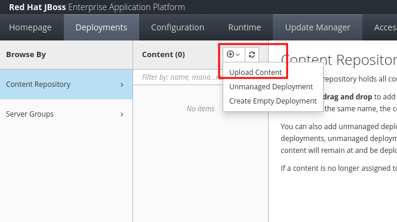
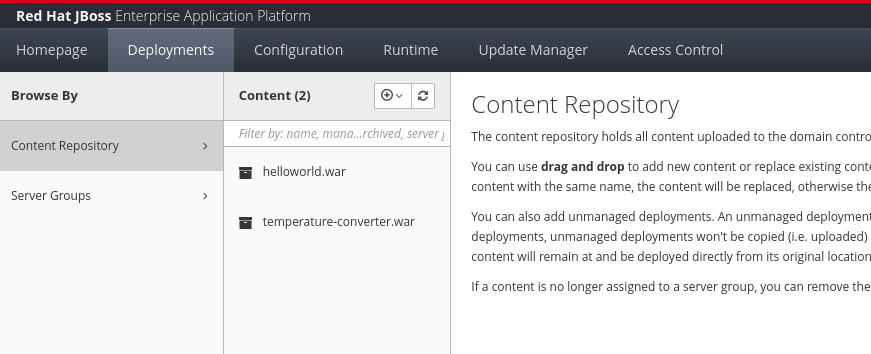
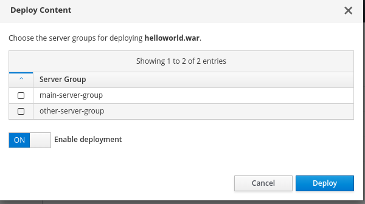
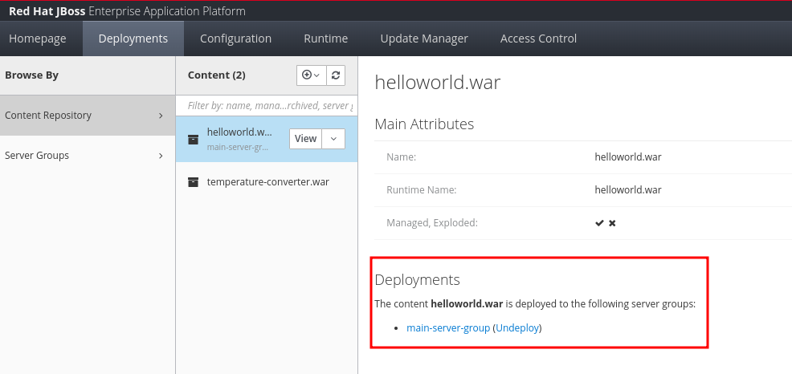
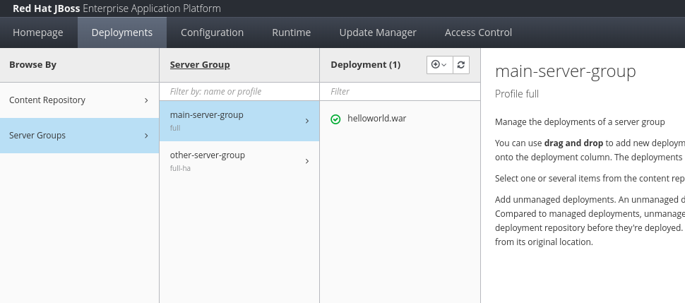
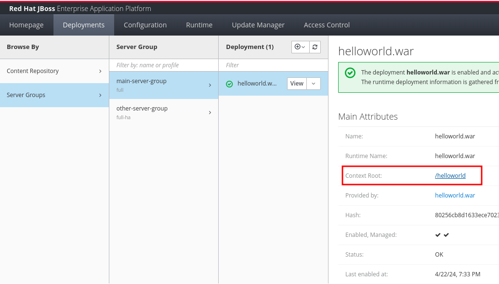
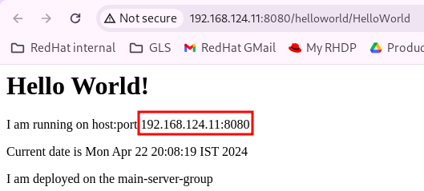
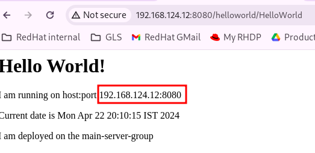
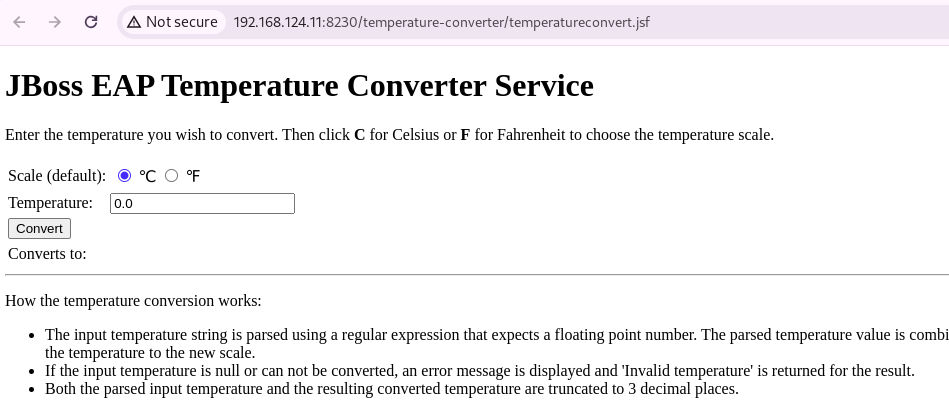

Deploying Applications in a Managed Domain
In standalone mode, you deploy applications scoped to a particular instance. You have to deploy the applications individually on ALL instances. In domain mode, you have the flexibility of deploying applications to multiple server instances from a central control point.
Deployments in domain mode are scoped to the Server Group. In large production roll outs, it is very common to create one or more managed domains of JBoss EAP servers, create a server group for every unique application, and then assign deployments to these server groups. A server groups will contain one or more server instances spread across multiple hosts for high availability and redundancy.
You typically upload deployments (WAR, JAR or EAR files) to a staging area using the web console or the CLI, and then deploy the applications to specific server groups. An application can be deployed to more than one server group.
Exercise: Deploying Applications in a Managed Domain
Pre-requisites
-
You must have set up a managed domain consisting of a domain controller and 2 host controllers. There must be at least two server groups created each with two servers assigned to them.
-
Download the two applications (WAR files) we will deploy in this exercise:
-
(Optional) The source code for both of these applications is available at https://github.com/RedHatQuickCourses/eap-qc-apps/tree/main/apps. To build the WAR files from source:
-
Install Apache Maven (https://maven.apache.org) v3.9 or higher
-
Install a Java 17 development environment
-
Change to the directory where you cloned the source code for the apps and run
mvn clean package -
The WAR file is built and will be available under the
targetfolder of the application source directory
-
Steps
-
Log in to the EAP web console as the
eap-domain-adminuser. -
Click
Deploymentsto view the deployments for this domain. This is the place where you can upload application WAR files. You can then assign these uploaded WAR files to one or more server groups in a managed domain. -
Click
Content Repositoryin theDeploymentspage. Click theAdddrop-down in theContentcolumn, and then clickUpload Content. -
In the
Add Contentscreen, click onChoose a file or drag it hereand upload thehelloworldWAR file you downloaded in the pre-requisites section. ClickNextand thenFinish. Once the file is uploaded and you see aUpload successfulmessage, clickClose. -
Repeat the previous step to upload the
temperature-converter.warfile. You should now see two entries in theContentcolumn of theDeploymentspage.
-
In a managed domain, you always deploy applications to a server group and not to individual servers. You can deploy applications using the web console in two ways. Click on
Content Repositoryand select your WAR file in theContentcolumn. Expand theViewdrop-down and clickDeploy. You can also click onServer Groups, and then select the group in theServer Groupcolumn. In theDeploymentcolumn, click theAddbutton and then selectUpload Deployment. In both cases, you will see a screen similar to below, where you can select one or more groups to deploy the application. -
For the
helloworld.war, select themain-server-groupand clickDeploy. After some time, you should see a success message indicating that the application was deployed. -
Repeat the above steps and deploy the
temperature-converter.warapplication to theother-server-group. -
You can now switch to the
Server Groupsview in theDeploymentspage and select the groups in theServer Groupcolumn to see the applications deployed in the group. -
Click on
Server Groups > main-server-group > helloworld.warto view the attributes of the deployed application. Recall that you had configured themain-server-groupto containserver-oneandserver-three. These two servers are spread across different hosts for redundancy and fail over. Click on the/helloworldlink next toContext Root, and open it in a new tab -
You should see the output of the
helloworldapplication displayed in the web page. It prints some details about the host and port it is running, the current date and the server group. -
On systems where firewalls are enabled (RHEL 9, Fedora), you will not see any output. You need to open up ports
8080and8230on botheap1andeap2VMs. Execute the below commands on BOTH VMs:[root@eap1] firewall-cmd --permanent --add-port=8080/tcp success [root@eap1] firewall-cmd --permanent --add-port=8230/tcp success [root@eap1] firewall-cmd --reload success -
Now navigate to http://ip_of_eap2:8080/helloworld in a new tab on your browser and observe that the same application should show similar output, but this time it shows a different host and port.
 -
Next, click on
Server Groups > other-server-group > temperature-converter.war, and then click the link next toContext Root. Observe that the port is8230, a value that150greater than the base port8080as per your domain configuration. You should see the temperature converter’s input form. Try entering different values and convert between celsius and fahrenheit.You can see the same output when you navigate to http://ip_of_eap2:8230/temperature-converter Remember to open up firewall ports 8080 and 8230 on the eap2 VM to ensure application output